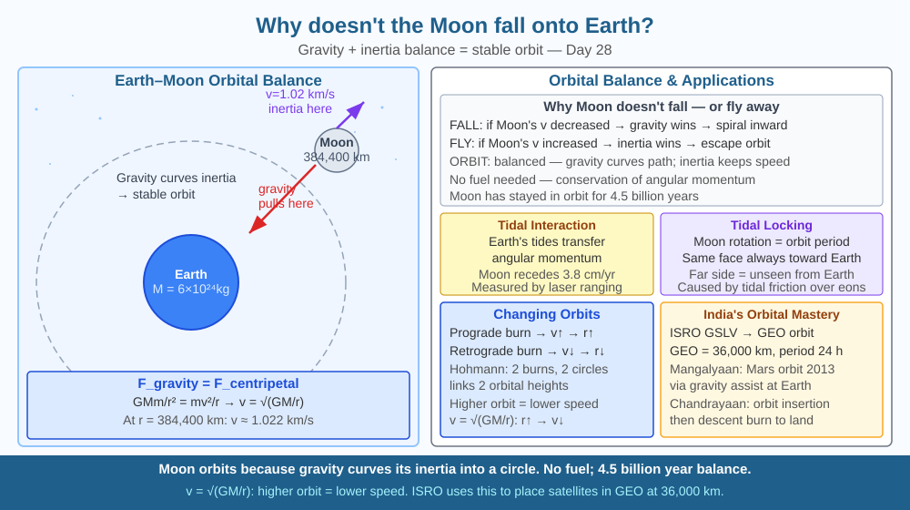

By the end of this lesson, you should be able to explain the balance between gravity and orbital inertia, predict what would happen if the Moon's orbital speed decreased, and connect this to India's Chandrayaan missions.
The Moon is 384,400 km from Earth. Earth's gravity still pulls it — with a force strong enough to raise our oceans in tides. Yet the Moon has been orbiting for 4.5 billion years without falling or flying away. Is there some invisible force holding it up? And if we removed that invisible force, would it crash?
There is no invisible force. The Moon is falling — constantly. But it keeps missing.
The same principle as satellites (Day 27): The Moon moves fast enough sideways that as it falls toward Earth under gravity, Earth's surface curves away beneath it at the same rate.
The Moon's orbital balance: - Earth's gravity pulls the Moon toward Earth (centripetal force) - The Moon's orbital velocity (1.022 km/s) keeps it moving tangentially - These two effects balance: the Moon curves around Earth in a nearly circular orbit
Newton's universal gravitation: F = GMm/r² = mv²/r (centripetal force) v = √(GM/r) at r = 384,400 km → v ≈ 1.022 km/s
Why it's not flying away: Inertia (tendency to travel in a straight line) would send the Moon off into space if gravity suddenly stopped. But gravity continually curves its path inward. The Moon doesn't need any fuel — it has been in this stable orbit for 4.5 billion years.
Tidal interaction: Earth's tides create a slight bulge in Earth's mass that pulls on the Moon, transferring angular momentum. This causes the Moon to very slowly spiral outward — it is moving away at 3.8 cm/year. Billions of years ago, the Moon was much closer and Earth's day was only 6 hours.
Tidal locking: The Moon rotates once for every orbit it makes around Earth (29.5 days), which is why we always see the same face. This was caused by tidal friction from Earth's gravity acting on the Moon over billions of years, slowing its rotation until it matched its orbit.
Imagine the Moon attached to Earth by an invisible elastic band — not a rigid rod, but something that always pulls inward. Now imagine the Moon trying to travel in a straight line outward (its inertia). The elastic band keeps pulling it back inward. The Moon wants to fly straight; the band keeps curving it. The result is a compromise: circular orbit.
Now think about what changes that orbit:
The Moon's current speed of 1.022 km/s is not a coincidence — it is the exact speed at which Earth's gravitational pull equals the centripetal acceleration needed to curve the Moon's path into a circle at 384,400 km distance. Any significant change in speed breaks the balance.
The included SVG shows Earth at the left and the Moon in orbit at the right, connected by two annotated arrows. A curved blue arrow traces the Moon's orbital path around Earth as a grey ellipse. At the Moon's position, two straight arrows point in different directions: one pointing tangentially forward (labelled "Inertia — Moon's tendency to travel straight") and one pointing back toward Earth (labelled "Gravity — Earth's pull"). A third curved arrow shows the actual path curving between the two, labelled "Orbit — the compromise." A second inset shows the tidal bulge: Earth with an elongated ocean bulge pointing toward the Moon, and a dotted arrow indicating the bulge pulls the Moon forward, transferring angular momentum and slowly increasing the Moon's orbital radius by 3.8 cm/year. A scale bar shows 384,400 km.

Chandrayaan-1 (2008): India's first lunar mission, launched by ISRO. Used the Moon Impact Probe to discover water ice in permanently shadowed craters at the lunar poles — a discovery published in Science and confirmed by NASA. This makes the Moon a potential resource depot for future missions.
Chandrayaan-3 (2023): India became the first country to land near the Moon's south pole. The lander Vikram and rover Pragyan operated for one lunar day (14 Earth days) and confirmed sulphur, iron, oxygen, and several other elements in the south polar soil. Future missions could use these to produce water and rocket fuel on the Moon.
Orbital mechanics in ISRO launches: PSLV and GSLV precisely calculate the orbital velocity needed for each mission altitude. Chandrayaan-3 used a series of orbit-raising manoeuvres — each engine burn at the right speed and angle — to spiral from Earth orbit to Moon orbit, then to land.
Orbital balance demo: Tie a small ball to a string. Swing it horizontally. The string represents gravity (centripetal force). Now swing it faster — you need to hold the string tighter (more centripetal force needed for faster speed). Slow it down — the ball drops. The Moon would drop if its speed decreased. Let go of the string — the ball flies outward (inertia). The Moon would fly off if gravity disappeared.
The Earth-Moon system is actually a double-planet system in some ways: the Moon is about 1/81st of Earth's mass — far more massive relative to its planet than any other moon in the solar system. The Moon's gravity significantly affects Earth: without it, Earth's axial tilt (currently 23.5°) would wobble chaotically between 0° and 85° over millions of years. This would make Earth's climate extremely unstable — ice ages would be severe and unpredictable. The Moon's gravitational stabilisation of Earth's axial tilt may be one of the factors that allowed complex life to evolve on Earth over hundreds of millions of years.
Predict: The Moon is currently moving away from Earth at 3.8 cm per year. If this continues, what happens to the length of Earth's day over billions of years — does it get longer or shorter? What happens to tidal heights around India's coastline as the Moon retreats? Use the relationship between orbital radius, orbital speed, and angular momentum to reason through your answer.
Why doesn't the Moon crash into Earth despite gravity pulling them together?
Correct answer: A
Why is understanding orbital balance more useful than knowing the Moon stays in the sky?
Correct answer: C
If the Moon's orbital speed suddenly decreased, what would you predict?
Correct answer: B
The Moon's orbital radius is 384,400 km and its orbital speed is 1.022 km/s. Earth's GM = 3.986 × 10¹⁴ m³/s².
(a) Verify the Moon's orbital speed using v = √(GM/r). Show your working. (b) The Moon is receding at 3.8 cm/year. Using the formula v = √(GM/r), calculate how much the Moon's orbital speed changes per year as a result. (c) If a future asteroid impact slowed the Moon's orbital speed by 10 %, calculate the new orbital speed and determine whether the Moon would spiral inward or outward — and estimate the new equilibrium orbital radius using v = √(GM/r) rearranged for r. (d) Chandrayaan-3 entered a circular lunar orbit at 100 km altitude (Moon's radius = 1,737 km, Moon's GM = 4.9 × 10¹² m³/s²). Calculate the orbital speed Chandrayaan-3 needed at this altitude.
Every time you look at the Moon, you are seeing exactly the same face — always. The far side of the Moon was completely unknown to humanity until the Soviet Luna 3 spacecraft photographed it in 1959. This is not a coincidence: the Moon rotates on its axis at exactly the same rate it orbits Earth (once every 29.5 days). This tidal locking happened because Earth's gravity, acting on a slight asymmetry in the Moon's mass distribution, applied a torque that slowed the Moon's rotation over hundreds of millions of years until rotation and orbit were synchronised. The same process is slowly happening to Earth — in billions of years, Earth's rotation will slow until the same side of Earth permanently faces the Moon, just as the Moon's same side always faces us.
The Moon does not fall onto Earth because its sideways orbital speed — 1.022 km/s — means that as gravity curves its path toward Earth, it keeps missing, just like a satellite; slow it down and it would spiral inward, but at this speed the orbit is self-sustaining for billions of years.